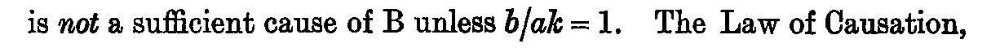
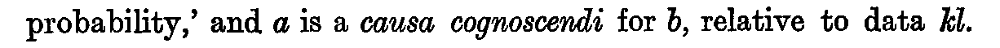

Notes on Part III: (i.) On the Use of the Term *Induction* / (ii.) On the Use of the Term *Cause*
J. M. Keynes, A Treatise on Probability (London: Macmillan, 1921), first edition, pp. 274–280 (Cornell copy, PDF pp. 294–300). Formula atlas: every ledger row of the chapter beside the printed line it records.
| Formulas in Lean | 20 / 20 formulas (✓20 ≈0 ✎0), not yet 0 — 100.0% |
|---|---|
| Ledger rows | 22 |
| Formulas | 20 (display 0, inline 20; items 10, numbered 0) |
| Formulas by Lean status | ✓20 ≈0 ✎0 未0 |
| Notation | 2 (with a Lean counterpart 2) |
| Reference rows | 0 |
Every count on this page is computed from the census ledger, which is built from the page images of the 1921 first edition only (no translation, OCR or e-text is used to count). A formula is an expression containing a relation sign (=, ≠, <, >, ≤, ≥, ≡, ⊃, → and their printed variants, including formulas inside figures, tables and footnotes, and formulas quoted from other authors); a display formula counts one per printed line, so a chain of equalities set over three lines counts three, and an inline formula counts one per expression. A compound expression without a relation sign (such as a/h, g(φ, f) or x1x2…xn/ġh) is counted separately as notation; a bare symbol, even with subscripts, primes or bars, is not counted. Footnote formulas follow the same rule, and a formula reprinted on another page is counted again. The Lean column of a formula row takes one of four values, fixed mechanically: ✓ the printed relation appears as stated in a theorem (only the names of bound variables, Lean notation and the layout of subscripts may differ); ≈ a theorem states an algebraically equivalent form (cleared denominators, a definition substituted, a change of variables); ✎ the printed line is refuted or not derivable, and a corrected form is proved; 未 none of these (a line inside a proof, a definition only, or no counterpart).
notes-001
- Transcription
b/ak = 1,- Lean
- ✓phase9c/Notes_ii.SuffCause (def 本体)
- Anchor words
(i.) If/, A is a sufficient cause of B.- Remarks
- 十分原因
- Crop
- folio 276, x 125–1335, y 1035–1081 (full-size scan pixels)
notes-002
- Transcription
b/āk = 0,- Lean
- ✓phase9c/Notes_ii.NecCause (def 本体)
- Anchor words
(ii.) If/, A is a necessary cause of B.- Remarks
- 必要原因
- Crop
- folio 276, x 125–1335, y 1168–1211 (full-size scan pixels)
notes-003

- Transcription
b/ak = 1.- Lean
- ✓phase9c/Notes_ii.Def_iii (def 本体)
- Reprint of
- notes-001
- Anchor words
a sufficient cause of B unless- Remarks
- k が全法則を含む場合
- Crop
- folio 276, x 125–1335, y 1251–1298 (full-size scan pixels)
notes-004
- Transcription
b/ak = 1.- Lean
- ✓phase9c/Notes_ii.LawOfCausation (def 本体)
- Reprint of
- notes-001
- Anchor words
prior to B, such that/No use has been made- Remarks
- 因果律の言い換え
- Crop
- folio 276, x 125–1335, y 1469–1515 (full-size scan pixels)
notes-005
- Transcription
b/akl = 1- Lean
- ✓phase9c/Notes_ii.SuffCauseUnder (def 本体)
- Anchor words
(iv.) If/and- Remarks
- 条件 l 下の十分原因、第 1 条件
- Crop
- folio 276, x 125–1335, y 1600–1647 (full-size scan pixels)
notes-006
- Transcription
b/kl ≠ 1,- Lean
- ✓phase9c/Notes_ii.SuffCauseUnder (def 本体)
- Anchor words
and/, A is a sufficient cause of B under conditions l.- Remarks
- 第 2 条件
- Crop
- folio 276, x 125–1335, y 1600–1647 (full-size scan pixels)
notes-007
- Transcription
b/ākl = 0- Lean
- ✓phase9c/Notes_ii.NecCauseUnder (def 本体)
- Anchor words
(v.) If/and- Remarks
- 条件 l 下の必要原因、第 1 条件
- Crop
- folio 276, x 125–1335, y 1684–1733 (full-size scan pixels)
notes-008
- Transcription
b/kl ≠ 0,- Lean
- ✓phase9c/Notes_ii.NecCauseUnder (def 本体)
- Anchor words
and/, A is a necessary cause of B under- Remarks
- 第 2 条件
- Crop
- folio 276, x 125–1335, y 1684–1733 (full-size scan pixels)
notes-009
- Transcription
b/ahk = 1- Lean
- ✓phase9c/Notes_ii.PossSuffCause (def 本体)
- Anchor words
existential proposition h such that- Remarks
- 可能的十分原因、第 1 条件
- Crop
- folio 276, x 125–1335, y 1772–1819 (full-size scan pixels)
notes-010
- Transcription
b/hk ≠ 1,- Lean
- ✓phase9c/Notes_ii.PossSuffCause (def 本体)
- Anchor words
and/, A is, relative to k, a possible sufficient cause- Remarks
- 第 2 条件
- Crop
- folio 276, x 125–1335, y 1818–1864 (full-size scan pixels)
notes-011
- Transcription
b/āhk = 0- Lean
- ✓phase9c/Notes_ii.PossNecCause (def 本体)
- Anchor words
existential proposition h such that- Remarks
- 可能的必要原因、第 1 条件
- Crop
- folio 276, x 125–1335, y 1864–1906 (full-size scan pixels)
notes-012
- Transcription
b/hk ≠ 0,- Lean
- ✓phase9c/Notes_ii.PossNecCause (def 本体)
- Anchor words
and/, A is, relative to k, a possible necessary cause- Remarks
- 第 2 条件
- Crop
- folio 276, x 125–1335, y 1906–1941 (full-size scan pixels)
notes-013
- Transcription
b/ahkl = 1,- Lean
- ✓phase9c/Notes_ii.PossSuffCauseUnder_src (def 本体), phase9c/def_viii_src
- Anchor words
(viii.) If- Remarks
- 条件 l 下の可能的十分原因、第 1 条件。(viii.)(ix.) は (vi.)(vii.) と異なり「there is an existential proposition h」を書かない (索引注記)
- Crop
- folio 276, x 125–1335, y 1940–1990 (full-size scan pixels)
notes-014
- Transcription
b/hk ≠ 1,- Lean
- ✓phase9c/Notes_ii.PossSuffCauseUnder_src (def 本体、印刷形), phase9c/def_viii_src
- Anchor words
b/ahkl = 1,(直前) /and h/akl ≠ 0- Remarks
- 第 2 条件に
lが無い ((iv.) はb/kl、(ix.) はb/hkl; 索引 E-III-4、S 疑義)。印刷形がそのまま def 本体にあるので ✓。l を補った形は phase9c/Notes_ii.PossSuffCauseUnder_l, phase9c/def_viii_l、関係は phase9c/def_viii_l_imp_src, phase9c/E_III_4_countermodel, phase9c/E_III_4_corrected_imp_printed - Crop
- folio 276, x 125–1335, y 1940–1990 (full-size scan pixels)
notes-015
- Transcription
h/akl ≠ 0,- Lean
- ✓phase9c/Notes_ii.PossSuffCauseUnder_src (def 本体), phase9c/def_viii_src
- Anchor words
and/, A is, relative to k,- Remarks
- 第 3 条件
- Crop
- folio 276, x 125–1335, y 1940–1990 (full-size scan pixels)
notes-016
- Transcription
b/āhkl = 0,- Lean
- ✓phase9c/Notes_ii.PossNecCauseUnder (def 本体), phase9c/def_ix
- Anchor words
(ix.) If- Remarks
- 条件 l 下の可能的必要原因、第 1 条件
- Crop
- folio 276, x 125–1335, y 2026–2082 (full-size scan pixels)
notes-017
- Transcription
b/hkl ≠ 0,- Lean
- ✓phase9c/Notes_ii.PossNecCauseUnder (def 本体), phase9c/def_ix
- Anchor words
b/āhkl = 0,(直前)- Remarks
- 第 2 条件 (l あり)
- Crop
- folio 276, x 125–1335, y 2026–2082 (full-size scan pixels)
notes-018
- Transcription
h/ākl ≠ 0,- Lean
- ✓phase9c/Notes_ii.PossNecCauseUnder (def 本体), phase9c/def_ix
- Anchor words
b/hkl ≠ 0,(直前) /and- Remarks
- 第 3 条件
- Crop
- folio 276, x 125–1335, y 2026–2082 (full-size scan pixels)
notes-019
- Transcription
h/akl ≠ 0,- Lean
- ✓phase9c/Notes_ii.PossNecCauseUnder (def 本体), phase9c/def_ix
- Reprint of
- notes-015
- Anchor words
and/, A is, relative to k, a possible necessary cause- Remarks
- 第 4 条件。頁末「relative to k, a possible necessary cause of B under conditions l.」
- Crop
- folio 276, x 125–1335, y 2026–2082 (full-size scan pixels)
notes-020
- Transcription
b/ahkl ≠ b/āhkl,- Lean
- ✓phase9c/Notes_ii.DepForProb (def 本体), phase9c/dep_for_prob
- Anchor words
causa essendi and causa cognoscendi. If/where a and b may be any propositions- Remarks
- 「確率上の依存」(causa cognoscendi) の定義。帰結は phase9c/def_viii_l_dep, phase9c/def_ix_dep。(x.) 因果的独立の定義 (277) は語のみ (phase9c/Notes_ii.CausallyIndependent, phase9c/def_x_src)
- Crop
- folio 277, x 125–1335, y 741–776 (full-size scan pixels)
notes-021

- Transcription
kl.- Lean
- Nphase9c/Notes_ii.DepForProb (前提 R.conj k l), phase9c/dep_for_prob
- Anchor words
causa cognoscendi for b, relative to data/If a and b are causally dependent- Remarks
- 「確率上の依存」の文末。名詞的資料 k と存在的資料 l の連言 (並置; ch18-001
ABと同じ基準で記法)。ピリオドは文末の句点 - Crop
- folio 277, x 125–1335, y 872–918 (full-size scan pixels)
notes-022
- Transcription
kl.- Lean
- Nphase9c/def_x_src (引数 k l)
- Reprint of
- notes-021
- Anchor words
possible causa essendi, relative to data/But, after all, the essential- Remarks
- 定義 (x.) を適用した文の文末。ピリオドは文末の句点
- Crop
- folio 277, x 125–1335, y 960–1001 (full-size scan pixels)